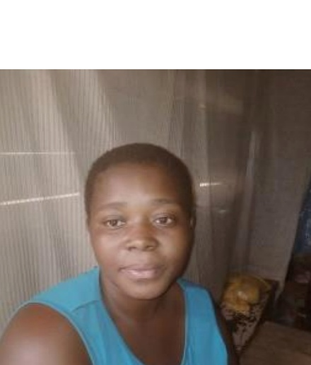
Practitioner
Mbabazi Solange
23 · Rwandese · Single mother of two
“When I heard about the reflexology training, I joined with little confidence. At the first time, my hands trembled during practice.”
“My pain became my gift”
Making reflexology an acclaimed complementary therapy — professional practice, training and holistic wellbeing for vulnerable communities.
Organisation overview
Vision — To make reflexology an acclaimed complementary therapy.
Mission — To unify and advocate for reflexology therapists and promote reflexology as a valuable complementary therapy through holistic support and non-invasive touch therapy.
Core values — Professionalism, Compassion, Openness, Diversity, Inclusion, Excellence.
Impact — Training practitioners, community-based care, empowering women and youth, and supporting refugees and host communities in Dzaleka and beyond.
Our story — Rooted in HUSID, a grassroots initiative offering Reflexology voluntarily. Founded in 2022. Officially registered as an NGO with the Ministry of Justice and Constitutional Affairs on September 19, 2025 (Trustees Incorporation Act of 1962, registration link No. D6HPJ5R).
RA
Registered Trustees · Dzaleka Refugee Camp
Dowa District, Central Region, Malawi
Who we are
Vision
“To make reflexology an acclaimed complementary therapy.”
Mission
To unify and advocate on behalf of reflexology therapists and to promote reflexology as a valuable complementary therapy through holistic support and natural healing processes for human wellbeing, using non-invasive touch therapy to stimulate specific reflex points and support physical, emotional and energetic balance.
Programmatic focus
Strategic programmatic arm of RA — community services, training, research, women and youth empowerment, outreach and partnerships. Not a separate organisation, but how RA turns vision into action on the ground in Dzaleka.
Awareness, public sensitisation and supportive wellness activities for refugees and host communities.
Training, capacity building, practitioner support and professional practice standards for therapeutic reflexologists.
Support for people affected by displacement, poverty, trauma and limited access to care — with dignity and referral pathways.
Collaboration with authorities, health professionals, organisations and reflexology networks in Malawi and beyond.
The IRC translates RA’s vision into practical initiatives — services, training, evidence and community empowerment in Dzaleka Refugee Camp.
Impact · Community stories
Summaries below. Full testimonies open in a popup.

Practitioner
23 · Rwandese · Single mother of two
“When I heard about the reflexology training, I joined with little confidence. At the first time, my hands trembled during practice.”
“My pain became my gift”
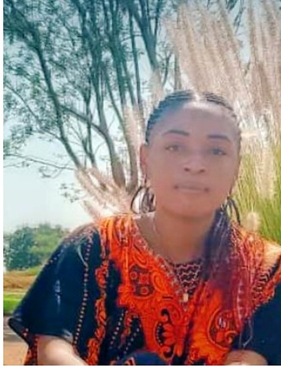
Family testimony
35 · Congolese · Mother of five
“Since my brother Albert Kasongo Del have amazingly got healed within almost a month, after having affected by an accidental Stroke…”
“We consider MIKYE as one of our family member”
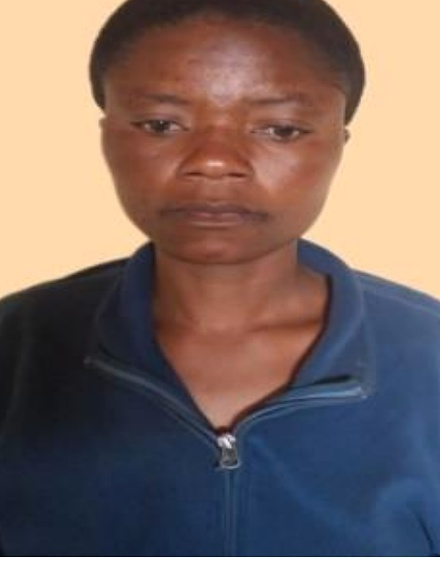
Host community
Malawian
“I was suffering from SALPINGITIS for six months in 2020… I have been treated by Madam Francine within two weeks and get healed up to now.”
“IRC is helping a lot”
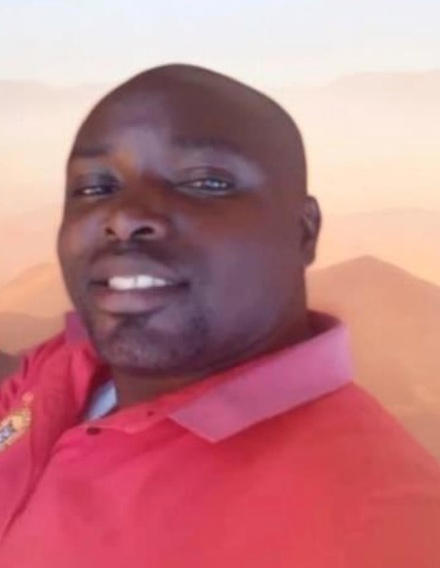
Client testimony
Burundian · In Malawi since 1994
“I have got a heavy pain in the low spine for almost two years… got relief after 3 weeks of treatment without any medication.”
“That was my amazing relief through Reflexology technique.”
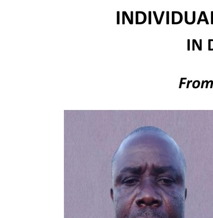
Client testimony
42 · Burundian · Father of four
“For a long time, I lived with persistent pain and physical discomfort that affected almost every part of my daily life.”
“I came looking for relief, but I found something greater: hope, dignity, and the courage to look toward tomorrow.”
Our team
Leadership and staff advancing professional reflexology in Dzaleka and surrounding communities.
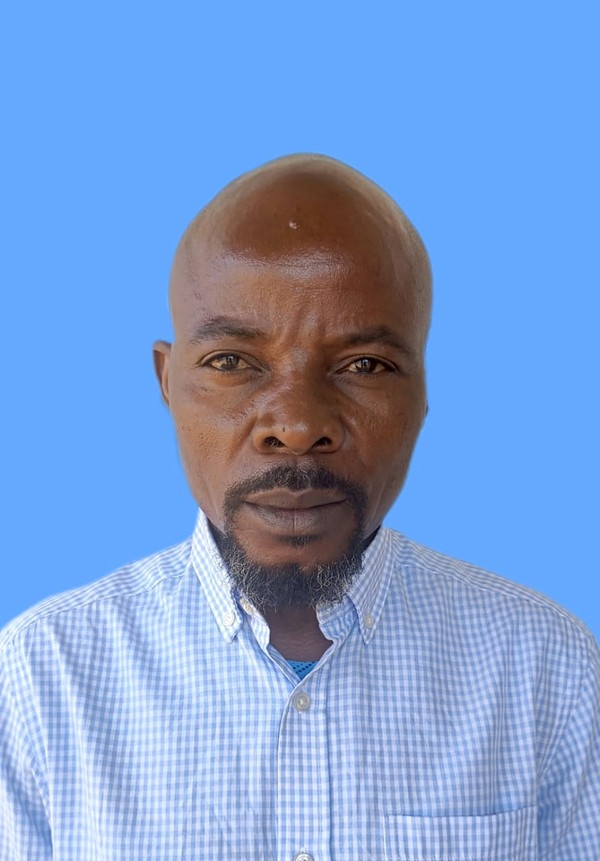
Founder & Coordinator
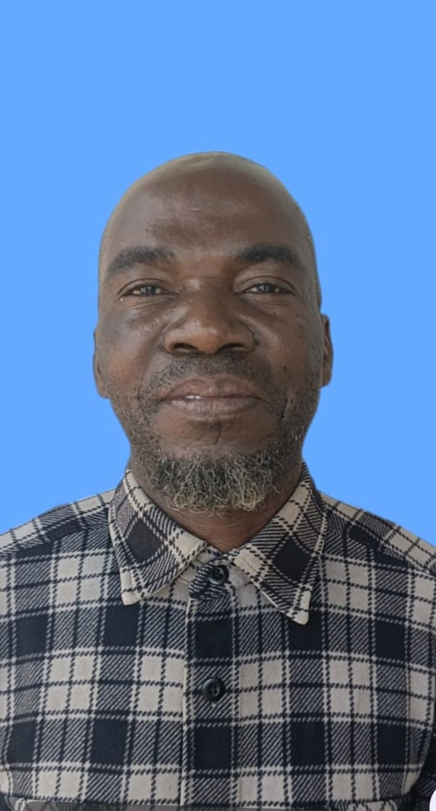
Center Manager
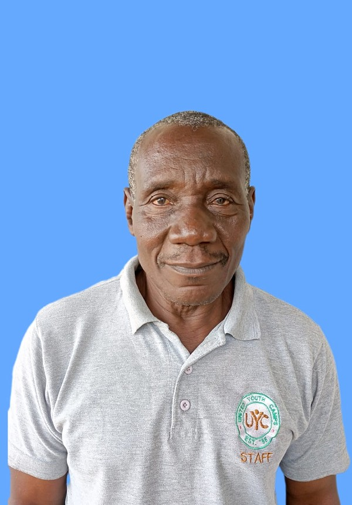
Program & Project Manager
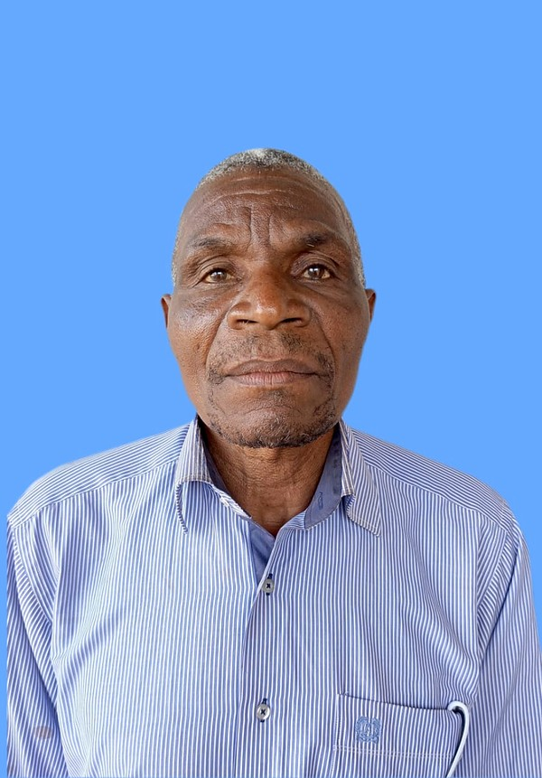
Secretary
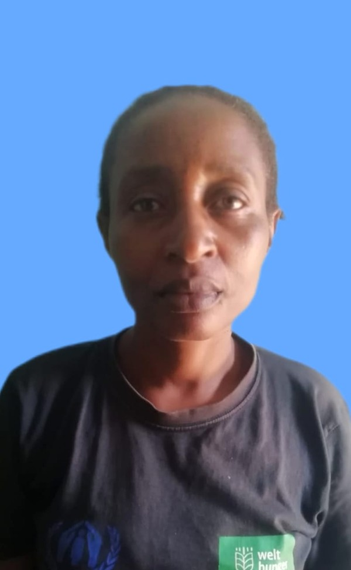
Treasurer
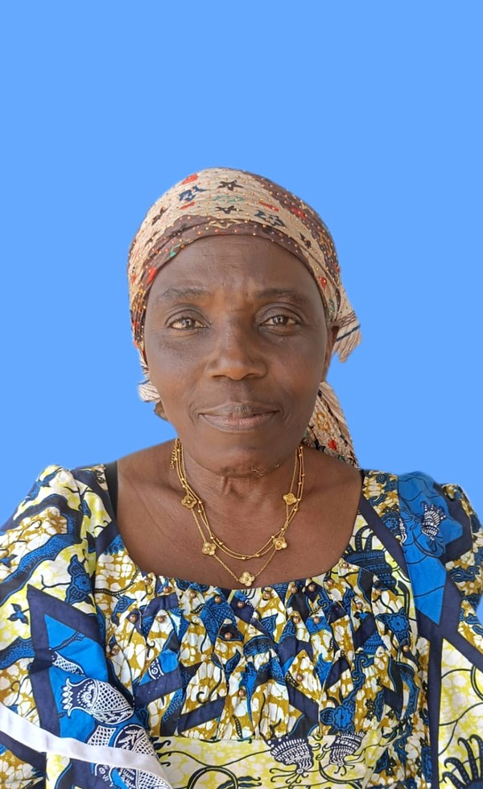
Community Outreach Officer
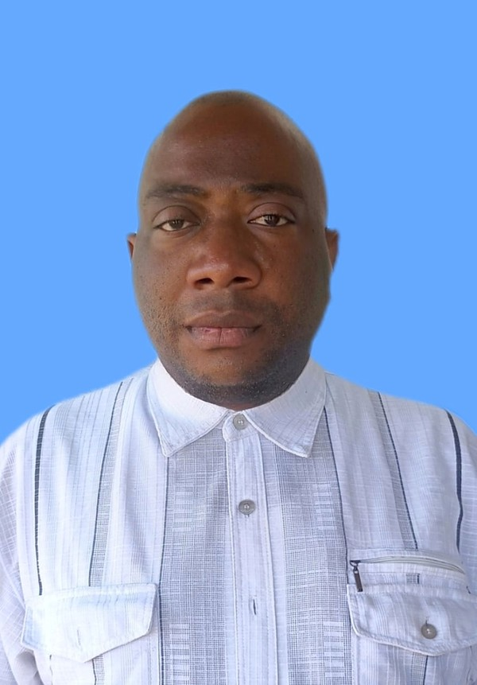
Vice Chairperson
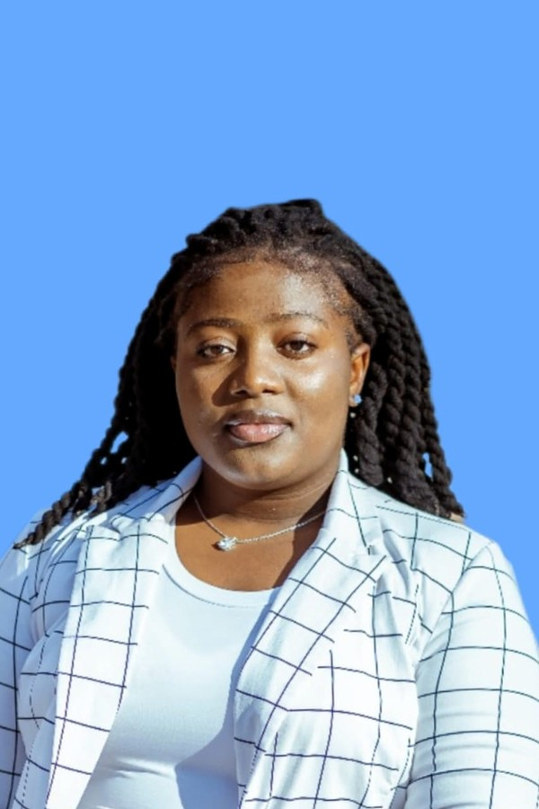
Head of the Advisory Unit
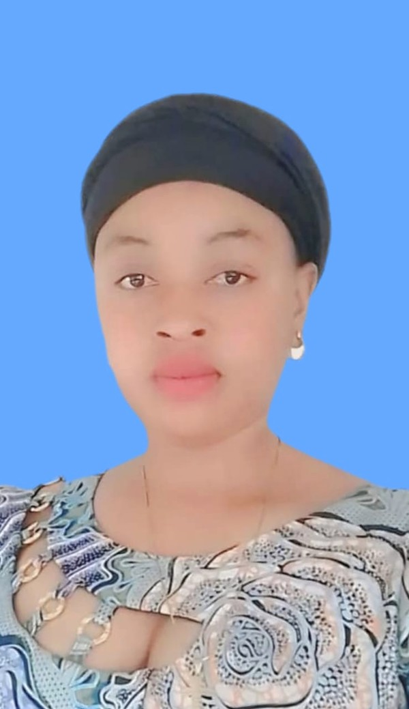
Board Member
Get involved
Qualified reflexologists, trainers and partners can contribute skills, mentoring and collaboration through the Integrative Reflexology Center.
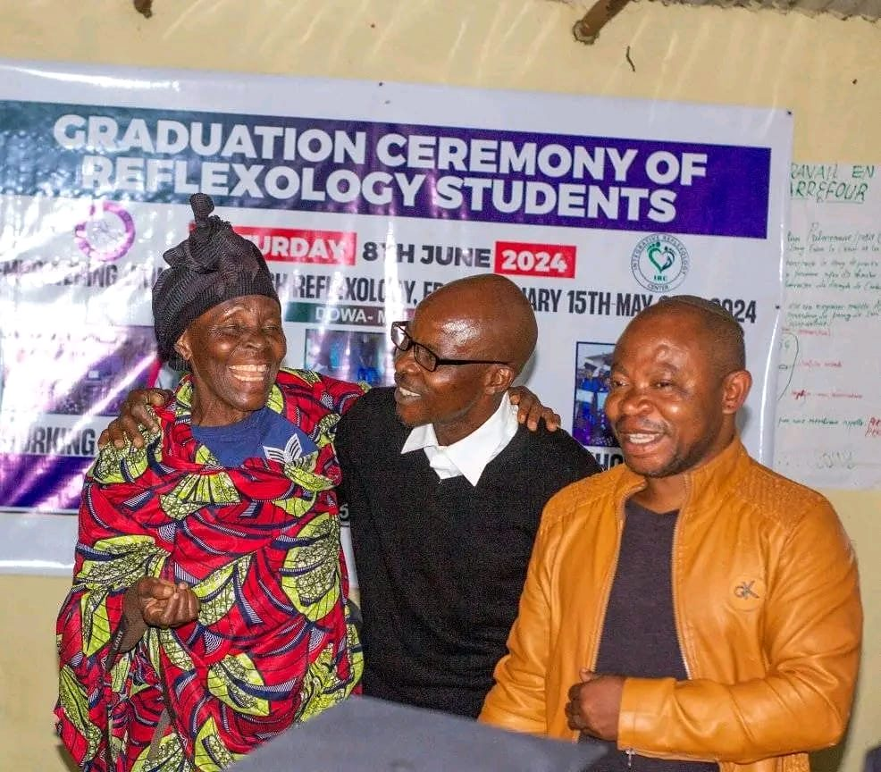
Reports & documents
Key materials available on request. Additional reports will be published as approved.
Vision, mission, values and objectives
Center positioning and functions
From HUSID to registered NGO (2025)
Impact stories from Dzaleka
Request documents: reflexologistsassociation@gmail.com